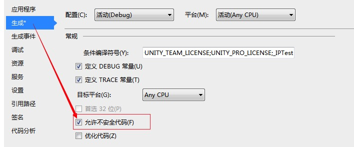

C# 不安全代码
コードブロックが使用する場合unsafe修飾子でマークすると、C# は関数内でポインタ変数を使用できます。不安全代码または非管理コードとは、使用している指针変数のコードブロック。
指针变量
指针ポインタは、別の変数のアドレスを値として持つ変数、つまりメモリ位置の直接アドレスです。他の変数や定数と同様に、ポインタを使用して他の変数のアドレスを格納する前に、ポインタを宣言する必要があります。
ポインタ変数宣言の一般的な形式は次のとおりです。
type* var-name;
以下はポインター型宣言の例です：
| 实例 | 描述 |
|---|---|
int* p |
p是指向整数的指针。 |
double* p |
p是指向双精度数的指针。 |
float* p |
p是指向浮点数的指针。 |
int** p |
p是指向整数的指针的指针。 |
int*[] p |
p是指向整数的指针的一维数组。 |
char* p |
p是指向字符的指针。 |
void* p |
p是指向未知类型的指针。 |
同じ宣言内で複数のポインタを宣言する場合、アスタリスクは*基本型とだけ一緒に記述されます。各ポインタ名のプレフィックスとしては使用されません。例：
int* p1, p2, p3; // 正确 int *p1, *p2, *p3; // 错误
次の例は、C#で使用するunsafe修飾子を使用する場合のポインタの使用を示しています。
实例
namespace UnsafeCodeApplication
{
class Program
{
static unsafe void Main(string[] args)
{
int var = 20;
int* p = &var;
Console.WriteLine("Data is: {0} ", var);
Console.WriteLine("Address is: {0}", (int)p);
Console.ReadKey();
}
}
}
上記のコードをコンパイルおよび実行すると、次の結果が生成されます。
Data is: 20 Address is: 99215364
メソッド全体をアンセーフコードとして宣言する必要はなく、メソッドの一部だけをアンセーフコードとして宣言することもできます。次の例はこれを示しています。
ポインターを使用してデータ値を取得します
您可以使用ToString()メソッドは、ポインタ変数が参照する位置に格納されているデータを取得します。次の例はこれを示しています。
实例
namespace UnsafeCodeApplication
{
class Program
{
public static void Main()
{
unsafe
{
int var = 20;
int* p = &var;
Console.WriteLine("Data is: {0} " , var);
Console.WriteLine("Data is: {0} " , p->ToString());
Console.WriteLine("Address is: {0} " , (int)p);
}
Console.ReadKey();
}
}
}
上記のコードをコンパイルおよび実行すると、次の結果が生成されます。
Data is: 20 Data is: 20 Address is: 77128984
ポインタをメソッドのパラメータとして渡す
ポインタ変数をメソッドのパラメータとしてメソッドに渡すことができます。次の例はこれを示しています。
实例
namespace UnsafeCodeApplication
{
class TestPointer
{
public unsafe void swap(int* p, int *q)
{
int temp = *p;
*p = *q;
*q = temp;
}
public unsafe static void Main()
{
TestPointer p = new TestPointer();
int var1 = 10;
int var2 = 20;
int* x = &var1;
int* y = &var2;
Console.WriteLine("Before Swap: var1:{0}, var2: {1}", var1, var2);
p.swap(x, y);
Console.WriteLine("After Swap: var1:{0}, var2: {1}", var1, var2);
Console.ReadKey();
}
}
}
上記のコードをコンパイルおよび実行すると、次の結果が生成されます。
Before Swap: var1: 10, var2: 20 After Swap: var1: 20, var2: 10
ポインタを使用して配列要素にアクセスする
C# では、配列名と、配列データと同じデータ型を指すポインタは異なる変数型です。たとえば、int *p と int[] p は異なる型です。ポインタ変数 p はメモリ内で固定されていないためインクリメントできますが、配列アドレスはメモリ内で固定されているため、配列 p をインクリメントすることはできません。
したがって、ポインタ変数を使用して配列データにアクセスする必要がある場合は、C または C++ で通常行うように、次を使用します。fixedキーワードを使用してポインターを固定します。
以下の例はこれを示しています：
实例
namespace UnsafeCodeApplication
{
class TestPointer
{
public unsafe static void Main()
{
int[] list = {10, 100, 200};
fixed(int *ptr = list)
/* 显示指针中数组地址 */
for ( int i = 0; i < 3; i++)
{
Console.WriteLine("Address of list[{0}]={1}",i,(int)(ptr + i));
Console.WriteLine("Value of list[{0}]={1}", i, *(ptr + i));
}
Console.ReadKey();
}
}
}
上記のコードをコンパイルおよび実行すると、次の結果が生成されます。
Address of list[0] = 31627168 Value of list[0] = 10 Address of list[1] = 31627172 Value of list[1] = 100 Address of list[2] = 31627176 Value of list[2] = 200
アンセーフコードをコンパイルする
アンセーフコードをコンパイルするには、コマンドラインコンパイラに切り替えて指定する必要があります。/unsafe命令行。
たとえば、アンセーフコードを含む prog1.cs という名前のプログラムをコンパイルするには、コマンドラインで次のコマンドを入力します。
csc /unsafe prog1.cs
Visual Studio IDE を使用している場合は、プロジェクトのプロパティでアンセーフコードを有効にする必要があります。
步骤如下：
- ソリューションエクスプローラー（Solution Explorer）のプロパティ（properties）ノードをダブルクリックして、開きます。项目属性（project properties）。
- 点击Build标签页。
- 选择选项"Allow unsafe code"。
袖里藏云
XLC***@foxmail.com
参考地址
fixedキーワード
C#で宣言された変数のメモリ内の格納はガベージコレクタによって管理されるため、変数（たとえば大きな配列）は実行中にメモリ内の別の場所に移動される可能性があります。変数のメモリアドレスが変化すると、ポインタも意味を失います。
解決方法は、fixed キーワードを使用して変数の位置を固定し、移動しないようにすることです。
static unsafe void Main(string[] args) { fixed(int *ptr = int[5]) {//...} }stackalloc
unsafe 環境では、stackalloc を使用してスタック上にメモリを割り当てることができます。スタック上に割り当てられたメモリはメモリマネージャによって管理されないため、対応するポインタを固定する必要はありません。
static unsafe void Main(string[] args) { int *ptr = stackalloc int[1] ; }袖里藏云
XLC***@foxmail.com
参考地址
草芦卧龙
442***595@qq.com
unsafe キーワードを追加した後のコードは、VS コンパイル環境でエラーが報告されます。エラーメッセージは次のとおりです。「アンセーフ コードは、/unsafe を指定してコンパイルした場合にのみ使用できます。」。
解决方法：

または、DOS で次のようなコンパイルコマンドを使用します。csc /unsafe Unsafe.cs(Unsafe.cs は、あくまで例として使用しているソースコードファイルです。)
草芦卧龙
442***595@qq.com